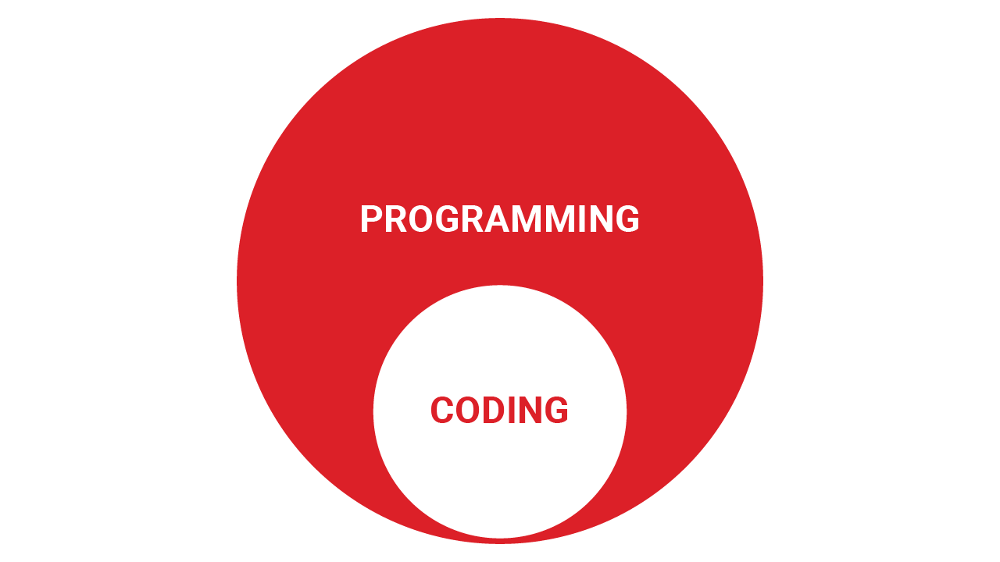
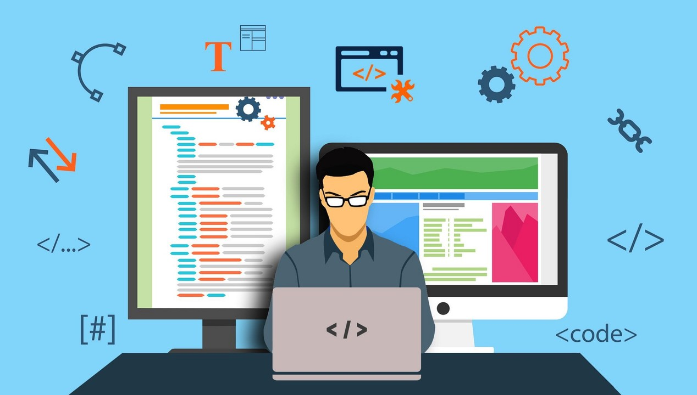

⌨️ Keyboard သုံးပြီး Code ရေးတတ်ရင်
🖥️ Computer ရှေ့မှာ ထိုင်ပြီး Program တစ်ခုလုပ်တတ်ရင်
Programmer ဖြစ်ပြီလို့ ထင်တတ်ကြပါတယ်။


"ဘာပြဿနာကို ဖြေရှင်းရမှာလဲ?" ဆိုတာကို အရင်လေ့လာပါတယ်။
ဥပမာ...
Food Delivery App တစ်ခု ဖန်တီးမယ်ဆိုရင် Code မရေးခင် User တွေ ဘာလိုအပ်လဲ၊ ဘာအခက်အခဲရှိလဲဆိုတာကို နားလည်ရပါတယ်။
Problem ကို ဘယ်လိုဖြေရှင်းမလဲဆိုတာကို Logic, Algorithm နဲ့ System Flow တွေ အသုံးပြုပြီး စီစဉ်ပါတယ်။
အခုမှပဲ စဉ်းစားထားတဲ့ Solution ကို Python, Java, JavaScript, C++ စတဲ့ Programming Language တွေနဲ့ Computer နားလည်နိုင်အောင် ရေးသားပါတယ်။
Coding ဟာ Programming ရဲ့ အဆင့်တစ်ခုသာ ဖြစ်ပါတယ်။
Program တိုင်းမှာ Bug ရှိနိုင်ပါတယ်။
ဒါကြောင့် Error တွေကို ရှာဖွေပြီး ပြင်ဆင်ကာ Program ကို မှန်မှန်ကန်ကန် အလုပ်လုပ်အောင် ပြုလုပ်ရပါတယ်။
Real-world Project တွေမှာ Programmer တွေက Designer, Tester, Project Manager နဲ့ အခြား Developer တွေနဲ့ ပူးပေါင်းပြီး အလုပ်လုပ်ကြပါတယ်။
Technology က အမြဲတမ်း ပြောင်းလဲနေတာကြောင့် Programmer တစ်ယောက်ဟာလည်း Skill အသစ်တွေကို ဆက်တိုက် လေ့လာနေရပါတယ်။
💡 Programming ဆိုတာ "Computer ကို Command ပေးတတ်ခြင်း code ရေးခြင်း" ထက်ပိုပြီး...
Problem တွေကို Logic နဲ့ ခွဲခြမ်းစဉ်းစားပြီး Technology အသုံးပြုပြီး ဖြေရှင်းနိုင်တဲ့ Skill တစ်ခု ဖြစ်ပါတယ်။
💬 သင် Programmer ဖြစ်ချင်တယ်ဆိုရင် Code မရေးခင် ဘာ Skill ကို အရင်တိုးတက်အောင်လုပ်မလဲ?